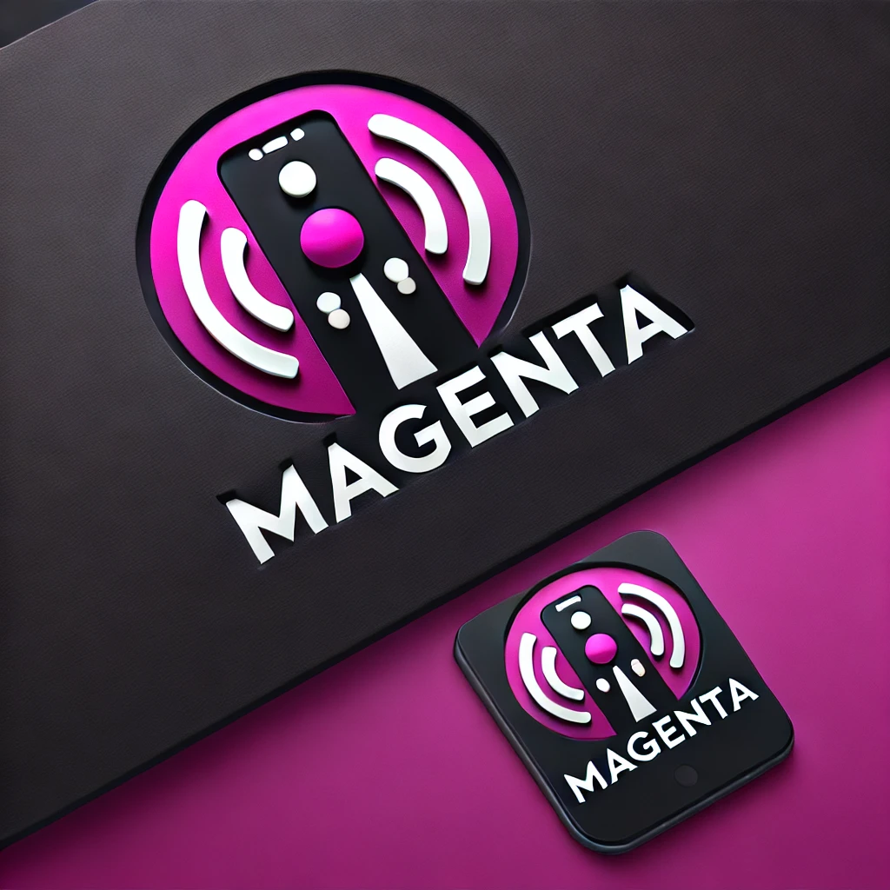
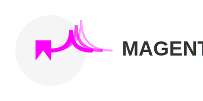

SVG images are very special (and unlike PNG or JPEG images) in that scaling them up or down does not result in a loss of quality. This is because SVG images are vector graphics, which means that they are defined by mathematical equations rather than pixels. This makes them perfect for logos, icons, and other images that need to be displayed at different sizes.
Unfortunately, this also makes them difficult to render using traditional LLMs. Whereas pixel values are easy to predict, the mathematical equations that define SVG images are much more complex. It's difficult for an LLM to notice visually unappealing elements in an SVG as compare to a PNG. There are PNG to SVG converters (and genAI capabilities) available on advanced photoshop applications like Adobe Photoshop, but the casual person wanting a logo will not have access to these advanced tools or the knowledge to navigate the complexities of these tools. This is where SVG-Gen comes in. SVG-Gen is a language model that has been fine-tuned on a dataset of SVG images. This allows it to generate SVG images from text descriptions, making it easy to create vector graphics without needing to know how to use a graphic design tool.
 Two LLMs were fed the prompt "May you generate an ___ image of a logo for a tech company named Magenta which focuses on selling telecommunication devices.". For the top left image, the ___ in the prompt was replace with "PNG". For the top right image, the ___ in the prompt was replaced with "SVG". It can beseen that the PNG image is more detailed and better-looking than the SVG image.